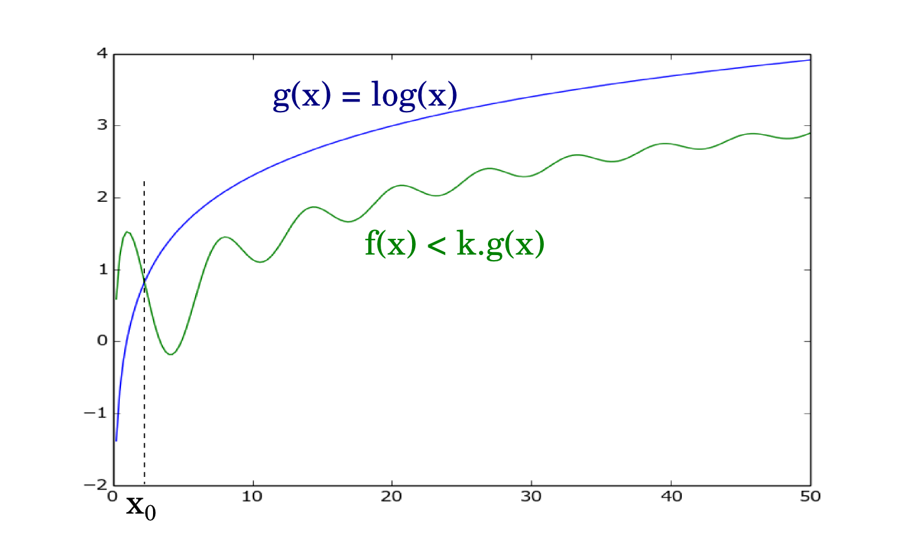
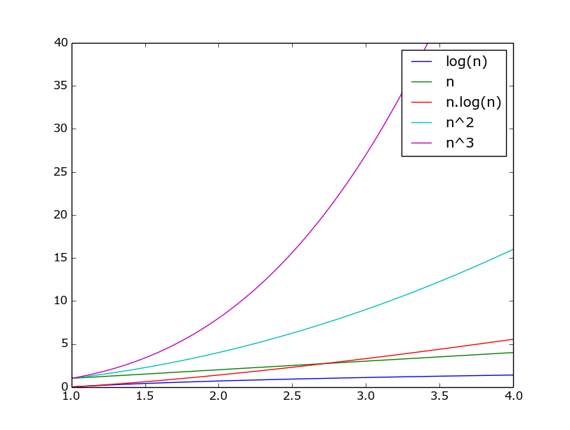

2 - Validité Logiciel Numérique
Objectifs
- Etre sensibilisé aux problèmes de précision, de capacité et de puissance de calculs des ordinateurs.
Pré-requis
- Concepts élémentaires en algorithmie
- Notions de base en architecture informatique
Introduction
L'algorithmie ou l'analyse informatique s'attachent à décrire des solutions informatiques théoriques à un problème posé. Ces solutions décrivent un cheminement pour aboutir au résultat excompté et ne souffrent d'aucune ambiguité : en toutes circonstances l'algorithme fournit un résultat.
La mise en oeuvre pratique de ces solutions n'est pas aussi évidente et se trouve confronté à plusieurs limitations : une solution théorique apportant une réponse à un problème peut apporter un résultat imprécis une fois transposée sur un ordinateur ou résoudre le problème mais dans des échelles de temps non acceptables. C'est ce que nous nous proposons d'étudier dans ce cours.
Typiquement, l'implémentation d'une solution sur un ordinateur peut être confrontée à trois types de problèmes :
- des problèmes de précision : 0,1+0,1+0,1-0,3 n'est pas strictement égal à 0 en arithmétique d'un ordinateur;
- des problèmes de capacité : charger dans la mémoire vive d'un ordinateur une matrice carré de 100000 lignes, avec des entiers stockés sur 8 bits, demande environ 10 Go de RAM;
- des problèmes de puissance : pour un ordinateur grand marché effectuant 106 opérations par secondes, un tri naif d'un tableau de 1000000 d'éléments prend plus d'une semaine.
Si les problèmes de capacité sont pratiquement résolus avec les évolutions récentes des ordinateurs, hormis pour quelques applications très poussées (il est tout de même assez rare de manipuler des matrices de 100000 lignes!), les problèmes de précision et de puissance sont encore au coeurs des problématiques actuelles.
Nous commencerons ce cours en revenant sur la représentration des nombres en machine pour montrer quelle imprécisions sur les calculs elle peut engendrer. Puis nous nous intéresserons à la complèxité des algorithmes qui nous permettra de comprendre pourquoi des algorithmes seront plus performants que d'autres en terme de temps de calcul.
Validité des calculs dans un ordinateur
Si les informations traîtées par un ordinateurs peuvent être de différentes nature (nombre, texte, etc.), elles sont représentées et manipulées par l'ordinateur sous forme binaire (suite de 0 et de 1). Le bit (binary digit) est l'unité de base de la représentation binaire. Chaque 0 ou 1 est un bit. "1001" est par exemple composé de 4 bits.
Cette représentation sous forme binaire a des conséquences sur les résultats de certaines opérations. L'opération "0,1 + 0,1 + 0,1 - 0,3" ne retourne par exemple pas exactement 0 en arithmétique d'ordinateur.
Dans ce chapitre, nous nous attarderons sur la représentation des nombres en machine (et les opérations associées), pour montrer comment elle peut induire des imprécisions sur les résultats de certains calculs.
Les différentes bases - Notations utilisées
Dans la vie courante, nous utilisons des chiffres de 0 à 9 : il s'agit de la base 10, composée de 10 symboles (les 10 chiffres). Nous parlerons aussi de base naturelle. Pour représenter un nombre en base 10, nous l'écrirons simplement, comme nous avons l'habitude de le faire (par exemple : 2016).
Il est pourtant possible d'utiliser n'importe quelle autre base que la base 10.
- les égyptiens utilisaient une base 12 (duodecimal) pour compter les heures et les mois
- les mayas et azteques ont employé une base 20 (vigésimal). Au moyen âge en france on a également employé cette base (d'où le quatre-vingt).
- la base 60 (sexagésimal) était utilisée par les sumériens. Il sert toujours pour mesurer les heures, minutes, secondes.
Pour écrire un nombre dans une autre base que la base naturelle, nous l'écrirons entre parenthèses et indiquerons la base en indice.
Par exemple (146)8 représente le nombre 146 dans la base 8.
Dans le domaine de l'infomatique, la base naturelle est la base 2, ou représentation binaire. Les bases 8 et 16 (respectivement 8 et 16 symboles) sont également souvent utilisées en informatique. En effet, ces bases sont des puissances de 2 et chaque symbole correspond exactement à un groupe de bits (respectivement 3 et 4 bits) ce qui rend les conversions très simples tout en apportant une écriture plus compacte que le binaire.
En hexadécimal (base 16), comme notre écriture ne comporte que 10 chiffres, nous utilisons des lettres pour compléter : 0 1 2 3 4 5 6 7 8 9 A B C D E F. "A" vaut 10, "B" 11, etc.
| Hexadécimal | Valeur | Binaire |
|---|---|---|
| 0 | 0 | 0000 |
| 1 | 1 | 0001 |
| 2 | 2 | 0010 |
| 3 | 3 | 0011 |
| 4 | 4 | 0100 |
| 5 | 5 | 0101 |
| 6 | 6 | 0110 |
| 7 | 7 | 0111 |
| 8 | 8 | 1000 |
| 8 | 9 | 1001 |
| 9 | 10 | 1010 |
| A | 11 | 1011 |
| B | 12 | 1100 |
| C | 13 | 1101 |
| D | 14 | 1110 |
| E | 15 | 1111 |
En octal (base 8), chaque symbole correspond à un groupe de 3 bits. L'écriture est moins compacte que l'héxadécimal mais présente l'avantage de ne pas requérir de symbole supplémentaire.
| Octal | Valeur | Binaire |
|---|---|---|
| 0 | 0 | 000 |
| 1 | 1 | 001 |
| 2 | 2 | 010 |
| 3 | 3 | 011 |
| 4 | 4 | 100 |
| 5 | 5 | 101 |
| 6 | 6 | 110 |
| 7 | 7 | 111 |
Décomposition dans une base et calcul de la valeur en base naturelle
Pour comprendre comment s'effectue la décomposition d'un nombre exprimé dans une base donnée, nous partirons d'un exemple d'un nombre en base naturelle (base 10).
Nous pouvons tous facilement établir que :
2019 = 2 * 1000 + 0 * 100 + 1 * 10 + 6 * 1
Si nous utilisont des puissances de 10, cela donne alors :
2019 = 2 * 103) + 0 * 102) + 1 * 101) + 9 * 100)
Qui est la décomposition en base 10 de 2019.
La décomposition dans une autre base respecte le même schéma. La décomposition de (146)8 s'écrira ainsi :
(146)8 = 1 * 82) + 4 * 81) + 6 * 80)
Pour évaluer la valeur de ce nombre en base naturelle, il ne reste qu'à évaluer les différents termes de la décomposition :
(146)8 = 1 * 64 + 4 * 8 + 6 * 1 = 102
(146)8 est égal à 102 en base naturelle.
La décomposition des nombres décimaux n'apporte pas de changement majeurs. Pour comprendre comment cela fonctionne, revenons à un exemple en base 10 :
2019,125 = 2 * 1000 + 1 * 10 + 9 * 1 + 1 * 0,1 + 2 * 0,01 + 5 * 0,001
Soit en utilisant des puissances de 10 :
2019,125 = 2 * 103 + 1 * 101 + 9 * 100 + 1 * 10-1 + 2 * 10-2 + 5 * 10-3
Dans une autre base que la base naturelle, cela donnera par exemple :
(1010,101)2 = 1 * 23 + 0 * 22 + 1 * 21 + 0 * 20 + 1 * 2-1 + 0 * 2-2 + 1 * 2-3
Ce qui nous permet d'évaluer la nombre : (1010,101)2 = 10,625
Pour finir ce paragraphe, nous remarquerons que le principe reste le même en hexadécimal, même si nous devons utiliser de nouveaux symboles :
(2A3F)16 = 2 * 163 + A * 162 + 3 * 161 + F * 160
Soit en remplaçant les lettres par leur valeurs en base 10 :
(2A3F)16 = 2 * 163 + 10 * 162 + 3 * 161 + 15 * 160 = 10815
Passage de la base naturelle à une base quelconque
Pouvoir utiliser toutes ces bases sera d'autant plus intéressant si nous disposons de moyens pour passer d'une représentation dans une base à une représentation dans une autre base. Dans le paragraphe précédent, nous avons montré comment décomposer un nombre écrit dans une base quelconque, ce qui permettait ensuite de l'évaluer. Ce faisant, nous avons réalisé le passage d'une base quelconque à la base 10.
Il nous reste à effectuer l'opération inverse. Pour ce faire, nous allons utiliser une propriété mathématique illustrée par l'égalité suivante :
2 * 163 + 10 * 162 + 3 * 161 + 15 * 160 = ((2 * 16 + 10) * 16 + 3) * 16 + 15
Le principe de cette égalité va nous permettre de retrouver, par divisions entières successives, l'écriture dans une base quelconque.
Division entière : soient a et b deux entiers positifs (b > 0). Il exite un unique couple d'entiers positifs (q, r) tels que a = b * q + r avec 0 ≤ r < b. q est le quotient de la division entière de a par b et r est le reste de cette division entière.
Pour écrire 10815 en base 16, nous commencerons donc par effectuer la division entière de 10815 par 16 :
10815 = 675 * 16 + 15
Puis nous repartons du quotient sur lequel nous effectuons à nouveau une divison entière :
675 = 42 * 16 + 3
Et nous répétons l'opération jusqu'à ce que le quotient de la division entière soit nul :
42 = 2 * 16 + 10
2 = 0 * 16 + 2
Pour reconstituer la représentation en base 16, il ne nous reste plus qu'à assembler les restes des divisions entières en partant du dernier vers le premier :
10815 = (2 "10" 3 "15")16 = (2A3F)16
Le principe est le même pour convertir vers une n'importe quelle autre base. Par exemple, pour retrouver l'écriture en base de 2 de 52 :
52 = 26 * 2 + 0
26 = 13 * 2 + 0
13 = 6 * 2 + 1
6 = 3 * 2 + 0
3 = 1 * 2 + 1
1 = 0 * 2 + 1
Soit au final :
52 = (110100)2
Dans le cas de nombres à virgules, nous distinguerons les parties entières et décimales et traiterons chacune d'elles de manière séparée. Nous savons déjà traiter la partie entière et il nous reste à trouver une méthode pour la partie décimale. Pour comprendre comment opérer, repartons de la décomposition en base 10 de 0,125 :
0,125 = 1 * 10-1 + 2 * 10-2 + 5 * 10-3
Comme pour la partie entière, nous pouvons factoriser les 10-1 pour obtenir :
0,125 = 10-1 * ( 1 + 10-1 * ( 2 + 10-1 * 5))
Pour éviter d'avoir à manipuler des puissance négatives, prenons le problème dans l'autre sens :
0,125 * 10 = 1 + 0,25
0,25 * 10 = 2 + 0,5
0,5 * 10 = 5 + 0,0
A chaque étape, nous séparons ainsi les partie entières et décimale puis multiplions par la partie décimale par la base. La décomposition finale est égale à la suite des parties entières.
Tentons par exemple de convertir 10,25 en base 2. Pour la partie entière, nous pouvons établir que :
10 = (1010)2
Puis, pour la partie décimale :
0,25 * 2 = 0 + 0,5
0,5 * 2 = 1 + 0,0
Ce qui donne donc pour la partie décimale :
0,25 = (0,010)2
Soit au final en réassemblant les deux parties :
10,25 = (1010,010)2
Un premier problème de précision
Revennons ici à notre problématique de départ : les erreurs lors de certaines opérations en mahcines. Pour ce faire, nous essayerons simplement de représenter 0,1 en base 2.
0,1 * 2 = 0,2
0,2 * 2 = 0,4
0,4 * 2 = 0,8
0,8 * 2 = 1,6
0,6 * 2 = 1,2
0,2 * 2 = 0,4
0,4 * 2 = 0,8
0,8 * 2 = 1,6
0,6 * 2 = 1,2
...
Nous pourrions poursuivre ainsi indéfiniement! Au même titre qu'il n'existe pas de représentation exacte de 1/3 en base naturelle (1 / 3 ≈ (0,333)10), il n'existe pas de réprésentation exacte de 0,1 en base 2 : (0,2)10 ≈ (0,00110011)2.
Arithmétique dans les bases différentes de la base naturelle
montrer juste ici quelques exemples d'additions et soustraction en base 2, 8 et 16 par exemple
Représentation des nombres en machine
Dans les paragraphes précédents nous avons vu comment passer d'une base à une autre et comment effectuer des opérations dans ces différentes bases. Nous avons également montré comment traiter le cas des nombres décimaux. Si nous n'avons pas porté une attention particulière aux nombres négatifs, c'est que ceux-ci ne présentent pas de difficultés particulières : il suffit d'ajouter le signe "-" devant le nombre à représenter.
Dans cette partie, nous nous concentrons sur la représentation des nombres dans un ordinateur. La base utilisée sera donc la base 2. Quelques spécificités propres à l'architecture des ordinateurs viendront s'ajouter à cette représentation en binaire. Nous mettrons en évidence les problèmes résultants.
Remarque : convention
Dans cette partie, nous ne manipulerons que les bases 2 et 10 qui ne seront plus nécessairement indiquées en indice des nombres.
Cas des nombres négatifs
Un premier problème se pose pour la réprésentation des nombres négatifs en machine. En effet, un ordinateur ne parle que le binaire (0 et 1). Il devient donc inenvisageable d'utiliser un signe "-" qui n'est pas compris par l'ordinateur.
La solution la plus simple consiste à utiliser un nombre fixe de bits (généralement 8, 16, 32 ou 64 bits) et à réserver celui le plus à gauche (le bit de poids fort) pour le signe : 0 pour positif, 1 pour négatif.
En appliquant cette règle et en utilisant un stockage sur 8 bits :
- 2 = 00000010
- (-2) = 10000010
Cette représentation possède deux inconvénients majeurs :
- le nombre 0 possède deux représentations : 00000000 et 10000000;
- l'addition "classique" ne fonctionne plus si un des nombres est négatif :
- (-3) = 10000011
- 2 = 00000010
- Donc (-3) + 2 = 10000011 + 00000010 = 10000101, soit -5.
Afin d'améliorer la représentation, nous utiliserons alors une notation en complément à deux. Elle est obtenue de la manière suivante :
- les nombres positifs sont écrits normalement;
- pour les nombres négatifs :
- inversion des bits de l'écriture binaire;
- ajout de 1 au résultat.
Par exemple, pour représenter -3 :
- 3 = (00000011)2
- inversion des bits : 11111100
- ajout de 1 : 11111101
- soit (-3) = 11111101
L'opération (-3) + 2 est maintenant traduite en :
11111101 + 00000010 = 11111111
qui si l'on revient à une représentation en base naturelle donne :
- un nombre négatif (commence par un "1"), on enlève 1 : 11111110
- invertion des bits : 00000001
- soit finalement -1.
Le résultat de l'addition en utilisant la représentation en complément à deux est exact.
Remarque : nombres minimum et maximum représentables
En utilisant le représentation en complément à deux et un stockage sur e bits, (e-1) bits restent disponible pour indiquer la valeur du nombre. Celle-ci peut donc être comprise entre -2e-1 et 2e-1 - 1.
Par exemple :
- sur 8 bits : entre -128 et 127;
- sur 16 bits : entre -256 et 255.
Cas des nombres décimaux
De même que pour les nombres négatifs, il n'est pas envisageable d'utiliser de virgule, non interprétable par un ordinateur parlant le binaire, pour représenter les nombres décimaux.
Nous avons par ailleurs vu que pour représenter les nombres négatifs en machine, nous utilisons un nombre de bits fixe en réservant le bits de poids fort pour le signe.
En s'inspirant de ce qui est fait pour les nombres négatifs, une première approche pour représenter les nombres décimaux serait d'utiliser un nombre fixe de bits en en réservant certains bits pour la partie entière et d'autres pour la partie décimale. Si cette représentation est opérationnelle, en pratique, nous constatons que les nombres manuipulés possèdent généralement :
- soit beaucoup de chiffres avant la virgule et peu après (ex : coordonnée d'un point d'intérêt en Lambert 93);
- soit beaucoup de décimales mais peu de chiffres avant le virgules (ex : longitudes/latitude en radian).
Sans remettre en cause le fonctionnement de notre représentation, cela présente tout de même quelques inconvénients. Les nombres utiliseront soit beaucoup de bits pour la partie entière et peu pour la partie décimale, soit l'inverse. Il devient dès lors difficile de réserver un nombre de bits adéquats pour chacune des parties et nous utiliserons beaucoup d'espace pour stocker des 0.
Pour palier aux limites de cette première approche, nous utiliserons une représentation en virgule flottante qui consiste à utiliser une forme normalisée de la représentation binaire du type x = a * 2n où :
- a est la mantisse comprise entre 1 et 2;
- n est un entier relatif appelé exposant.
Par exemple :
9,5 = (1001,1)2 = (1,0011)2*23
Le stockage de ce nombre dans l'ordinateur s'effectuera alors sous la forme d'un triplet (signe, exposant, mantisse) avec :
- 1 bit pour le signe : 0 pour positif / 1 pour négatif;
- e bits pour l'exposant;
- m bits pour la mantisse.
La norme IEEE-754 définit plusieurs formats basés sur ce modèle, différant par la précision de chacun d'eux :
- la simple précision utilise 1 bit de signe, 8 d'exposant et 23 de mantisse
- la double précison utilise 1 bit de signe, 11 d'exposant et 52 de mantisse
Elle précise également quelques règles améliorant la précision des nombres représentables :
- en binaire, la partie entière de la mantisse vaut toujours 1. Seule la valeur de la partie décimale sera donc stockée;
- pour éviter d'avoir à stocker des exposants négatifs, un décalage de
- (2e-1 - 1) est appliqué à la valeur des exposants (127, par exemple, en simple précision).
Pour calculer la valeur correspondant à un triplet stocké en respectant la norme IEEE-754, nous appliquerons finalement la formule :
valeur = (-1)s * (m + 1) * 2e - decalage
où :
- s = 0 pour un nombre positif / 1 pour un nombre négatif
- m = nombre compris entre 0 et 1
- e = exposant décalé compris entre -2e-1 + 1 et 2e-1

Par exemple :
9,5 = 0 10000010 00110000000000000000000
0,15625 = 0 01111100 01000000000000000000000
-2,25 = 1 10000000 00100000000000000000000
Quelques exceptions à cette règle existent toutefois. En effet la représentation n'est pas correcte pour les nombres valant 0 ou proche de 0. Si l'exposant vaut 0, la règle est alors de ne pas ajouter 1 à la mantisse. De même, si l'exposant vaut 2e - 1, la norme indique que le nombre vaut l'infini.
Le tableau suivant résume les formes normalisées/non normalisées de la norme :
| Exposant décalé | Mantisse | Type |
|---|---|---|
| 0 | 0 | 0 |
| 0 | =! 0 | (-1)s.m.21-d |
| de 1 à 2^e - 2 | quelconque | (-1)s.(m+1).21-d |
| 2^e - 1 | 0 | infini |
| 2^e - 1 | =! 0 | NaN |
Opérations sur les nombres en machine
La norme IEEE-754 consistant à représenter les nombres sous une forme du type \pm a * 2^n, l'addition de deux nombres ne sera possible que si leurs exposants sont identiques. L'opération consistera alors simplement à additionner les mantisses.
Une addition sera donc constituée de trois étapes :
- alignement des mantisses afin d'avoir deux exposants égaux
- addition des mantisses
- renormalisation si le résultat ne respecte plus la norme
Au cours de ces étapes, il faudra veiller à gérer correctement le bit implicite (partie entière de la mantisse non représentée dans la norme IEEE-754).
Illustrons avec un exemple, en tentant de calculer 9,5 + 1,75 :
9,5 = 0 10000010 00110000000000000000000
1,75 = 0 01111111 11000000000000000000000
L'exposant de 9,5 vaut 130 et celui de 1,75 vaut 127. Il faut donc décaler la mantisse de 1,75 (plus petit exposant) de 3 vers la droite, sans oublire d'insérer le bit implicite (entre parenthèse si dessous) :
0 01111111 (1) 11000000000000000000000
0 10000010 (0) 00111000000000000000000
Il est maintenant possible d'additionner les mantisses :
0 10000010 (1) 00110000000000000000000 + 0 10000010 (0) 00111000000000000000000 \= 0 10000010 (1) 01101000000000000000000
La représentation est déjà normalisée (bit implicite valant 1). L'addition est terminée.
Pour contrôler le résultat, évaluons le en base naturelle :
0 10000010 01101000000000000000000
= (-1)0 * (1,01101)2 * 2130-127 = (1011,01)2 = 11,25
Le résultat est correct !
Autres exemples intéressants (nécessite de bien gérer le bit implicite) :
- 9,5 + 9,25
- 9,875 - 1,75
- 9,75 - 9,5
Limites de la représentation
L'alignement des mantisses peut faire disparaître des bits "utiles" (ie. différents de 0) de la représentation.
Par exemple : * 9,5 + 1,7500001 * le 0,0000001 est perdu : cela revient à additionner 9,5 + 1,75 * 1016 + 0,1 * le 0,1 est perdu : cela revient à additionner 0 * 9,500000953674316 - 9,5 * (1000000 + 0,01171875) - 1000000
0,1 + 0,1 + 0,1 - 0,3.
Les réprésentation de 0,1 et 0,3 sont :
0,1 = 0 01111011 10011001100110011001101
0,3 = 0 01111101 00110011001100110011010
On calcule 0,1+0,1 :
0 01111011 ( 1) 10011001100110011001101 + 0 01111011 ( 1) 10011001100110011001101 \= 0 10000010 (11) 00110011001100110011010
On ajoute encore 0,1 :
0 01111011 ( 11) 00110011001100110011010 + 0 01111011 ( 1) 10011001100110011001101 \= 0 10000010 (100) 11001100110011001100111
Renormalisation de la mantisse de 0,1+0,1+0,1 :
0 01111011 (100) 11001100110011001100111 0 01111101 (1) 00110011001100110011001
Et on retire 0,3, le principe pour les soustractions étant le même que pour les additions (alignement des mantisses, opération sur les mantisses, renormalisation, le tout sans oublier de gérer le bit implicite.
Soustraction des mantisses :
0 01111011 ( 1) 00110011001100110011001 - 0 01111101 ( 1) 00110011001100110011010 \= 1 01111101 ( 0) 00000000000000000000001
Il reste à renormaliser la mantisse :
1 01111101 (0) 00000000000000000000001 1 01100110 (1) 00000000000000000000000
Soit en évaluant l'expression : -2-25 = -3 * 10-8
Représentation des caractères en machine
Une chaîne de caractères est représentée comme une suite de caractères. Le codage des caractères est fait grace à une table de correspondance indiquant l'équivalent binaire de chacun des caractères. La table de correspondance la plus utilisée est l'ASCII (Américan Standard code for Information Interchange). Chaque caractère y est représenté sur 7 bits. Notons que le code ASCII étendu, utilisant 8 bits, permet de coder des caractères supplémentaires (accents, etc.) non présent initialement dans la langue anglaise.
Le codage ASCII utilisant 7 bits, la table complète permet de représenter 128 caractères (2^7). Les caractères correspondant au codes 0 à 31 et 127 représentant des caractères de contrôles (retour à la ligne ou autres actions spécifiques), restent 95 caractères affichables.

Nous avons vu qu'il était courant, dans un ordinateur, de représenter les chiffres binaires sur un nombre fixe de bits (32 ou 64 bits pour la norme IEEE-754 par exemple). Ces représentations trouvent ainsi une forme condensée sur 4 ou 8 octets en hexadecimal, ce qui simplifie grandement l'écriture : 4 caractères en hexadécimal contre 32 en binaire...
Exemple : Extrait de la table ASCII
| En base 10 | En base 16 | En base 2 | Symbole ASCII | Détail |
|---|---|---|---|---|
| 63 | 3F | 00111111 | ? | Point d'interrogation |
| 64 | 40 | 01000000 | @ | Arobase8 |
| 65 | 41 | 01000001 | A | Lettre latine capitale A |
| 66 | 42 | 01000010 | B | Lettre latine capitale B |
| 67 | 43 | 01000011 | C | Lettre latine capitale C |
Complexité en algorithmie
La théorie de la complexité algorithmique s'intéresse à l'estimation de l'efficacité des algorithmes. Elle s'attache à répondre à diverses questions sur un algorithme :
- l'algorithme apporte-t-il une réponse au problème posé ? C'est la notion de terminaison
- l'algorithme apporte-t-il la bonne réponse au problème posé ? Notion de validité
- l'algorithme apporte-t-il la bonne réponse dans un temps acceptable ? Notion de complexité
Afin de définir précisément ces trois notions, commençons par redéfinir de manière plus mathématique un algorithme.
Un algorithme est formé d'un ensemble fini d'opérations liées par une structure de contrôle et dont les opérandes portent sur un ensemble fini de variables.
Un algorithme résoud le problème qui est posé si la suite des opérations est finie (condition de terminaison) et si, lors de la terminaison, le sous-ensemble des variables de sortie contient le résultat du problème (condition de validité).
Prouver un algorithme c'est démontrer mathématiquement que les conditions de terminaison et de validité sont satisfaites.
S'intéresser à l'estimation du nombre d'opérations nécessaires, à une constante près, pour résoudre le problème sur un sous-ensemble de taille fixe n, c'est établir la classe de complexité de l'algorithme.
Terminaison et validité
Nous illustrerons par quelques exemples la démonstration des preuves de terminaison et de validité d'un algorithme.
Considérons l'algorithme effectuant la somme des éléments d'un tableau.
Fonction somme (tableau, taille)
resultat = 0
Pour i allant de 1 à taille
rasultat = resultat + tableau[i]
Fin pour
Retourner resultat
Fin fonction
La terminaison est évidente puisque l'algorithme est constituée d'une boucle qui exécute n fois une somme et une affectation (opérations s'exécutant en temps fini).
Pour démontrer la validité, nous procédons par récurrence sur la taille du tableau. Nous devons démontrer que la formule S(n) = ∑Ti (pour i allant jusqu'à n).
- Si le tableau est composé de zero élément, la somme est initialisée à 0 avant la boucle et la boucle est parcourue 0-fois. La somme est donc correcte.
- Si le tableau est composé d'un élément, la somme calculée par l'algorithme est toujous correcte : elle est initialisée à 0 pour T1 est ajouté (S = 0 + T1 = T1), ce qui est correct.
- Si l'algorithme est vrai pour un tableau de p éléments, nous devons démontrer qu'elle l'est pour un tableau de p+1 éléments. S(p+1) = S(p) + T(p+1) = ∑Ti. La formule est donc correcte.
Complexité
Petit historique
A l'origine des analyses de complexité algorithmique, on indiquait, pour chaque algorithme trouvé, le temps de calcul pour un nombre donnée d'éléments en entrée, sur un processeur et avec un langage donnés. Cette méthode souffrait d'une grande faiblaisse : il était quasiment impossibilité de comparer les algorithmes entre eux.
La nécessité de disposer d'une approche indépendante des facteurs matériels s'est alors fait sentir.
L'idée de compter le nombre d'opérations élémentaires d'un algorithme est alors apparue.
La taille des données pouvant avoir un impact sur la performance d'un algorithme, elle peut également être prise en compte.
Notion de complexité
La complexité mesure le nombre d'opérations fondamentales qu'effectue un algorithme sur un jeu de données pour aboutir au résultat. Elle est exprimée en fonction de la taille du jeu de données, souvent noté n.
Nous ne nous intéresserons ici qu'à des jeux de données de grande taille (n > 1000). En effet, lorsque les jeux de données sont petits les ordinateurs actuels sont suffisamment puissant pour retourner un résultat en quelques millisecondes, même lorsque l'algorithme est mauvais. Nous dirons parfois que la complexité mesure la performance asymptotique d'un algorithme pour signifier qu'il s'agit de la performance lorsque la taille du jeu de données tend vers l'infini.
Les opérations élémentaires dont il est questions pour évaluer la complexité d'un algorithme sont au nombre de quatre : * adition, soustraction, multiplication, division * accès mémoire * comparaisons * calculs sur les pointeurs
Nous distinguons trois types de complexité :
- la complexité dans le meilleur des cas : plus petit nombre d'opérations qu'aura à effectuer l'algorithme sur le jeu de données;
- la complexité dans le pire des cas : plus grand nombre d'opérations qu'aura à effectuer l'algorithme sur le jeu de données;
- la complexité dans le cas moyen : moyenne des nombres d'opérations de l'algorithme sur des jeux de données de même taille.
C'est généralement l'analyse de la complexité dans le pire des cas qui focalisera l'attention. En effet nous observons que les algorithmes fonctionnent souvent dans des situations les plus mauvaises pour eux. L'analyse du pire des cas nous fournit alors une limite supérieure de temps de calculs : les performances seront toujours meilleures que dans ce cas. Dans la suite de ce cours, nous ne nous intéresserons qu'à la complexité dans le pire des cas.
Lorsque plusieurs algorithmes retournent le même résultat à partir d'un jeu de données (par exemple les différents algorithmes de tri), l'algorithme est dit optimal si sa complexité est la plus faible de tous.
Notations de Landau
La notation de Landau est utilisée pour définir rigoureusement la notion de complexité.
- O(f) pour le pire des cas
- Omega(f) pour le meilleur des cas
- Theta(f) pour le cas moyen
Pour le pire des cas, qui nous intéresse ici exclusivement, cette notation exprime une borne supérieure d'une fonction.
Si le nombre d'opération effectué par l'algorithme suit une fonction f(n), nous noterons O(g(n)) la complexité de l'algorithme avec f(n) = 0(g(n)).

Les règles suivantes s'appliquent lorsque l'on effectue des opérations :
- les constantes multiplicatives sont omises : O(c * g(n)) = c * O(g(n) = O(g(n))
- ainsi les termes constants sont notés O(1) (O(k) = O(k * 1) = O(1))
- l'addition est réalisée en ne retenant que le maximum : O(f(n) + g(n)) = O(f(n)) + O(g(n)) = max(O(f(n)), O(g(n)))
- la multiplication est "classique" : O(f(n) * g(n)) = O(f(n)) * O(g(n))
Par exemple, si un algorithme présente une complexité dans le pire des cas fonction de g(n) = 3 * n3 + 10 * n2 + 5, elle sera noté O(n3).
Classes de complexité
Les complexités que l'on rencontre fréquemment sont les suivantes :
- O(1) : accès constant
- O(log(n)) : logarithmique
- O(n) : linéaire
- O(n.log(n)) : quasi-linéaire
- O(n2) : quadratique
- O(n3) : cubique
- O(np) : polynomiale
- O(2n) : exponentielle
- O(n!) : factorielle

Le tableau ci-dessous fournit des temps d'exécution en secondes pour le différentes classes de complexité et différentes tailles de données, en considérant que l'ordinateur traite 106 instructions par secondes (106 FLOPS; ce qui correspond à un ordinateur bureautique classique en 2016).
| n | 10 | 20 | 30 | 60 |
|---|---|---|---|---|
| log(n) | 2,3.10-6 | 3,0.10-6 | 3,4.10-6 | 4,09.10-6 |
| n | 1.10-5 | 2.10-5 | 3.10-5 | 6.10-5 |
| n.log(n) | 2,3.10-5 | 5,99.10-5 | 1,02.10-4 | 2,46.10-4 |
| n2 | 10-4 | 4.10-4 | 9.10-4 | 3,6.10-3 |
| n3 | 10-3 | 8.10-3 | 2,7.10-2 | 2,16.10-1 |
| 2n | 1,02.10-3 | 1,05 | 1,07.103 | 1,15.1012 |
| n! | 3,6 | 2,4.1012 | 2,4.1026 | 8,3.1075 |
Il est intéressant de remarquer que 1012 secondes équivaut à environ 36 000 annnées !
Calculs de complexité
Dans ce paragraphe, nous donnons les éléments de base permettant de calculer la complexité d'un algorithme.
-
Une instruction simple (lecture, écriture, affectation...) s'effectue en accès constant : O(1)
-
Dans le cas d'une suite d'instructions simples, la complexité est égale à la somme des complexités.
| Instructions | Complexité |
|---|---|
| a = 2 | O(1) |
| b = 3 | O(1) |
| c = a + b | O(1) |
Complexité résultante : O(1)+O(1)+O(1) = max(O(1), O(1), O(1)) = O(1)
- Dans le cas d'un traitement conditionnel, la complexité au pire des cas est retenue est celle du bloc d'instructions le moins performant :
| Instructions | Complexité |
|---|---|
| Si condition | O(condition) |
| -- instructionsA | O(instructionsA) |
| sinon | |
| -- insctructionsB | O(instructionsB) |
| fin si | |
| Complexité résultante : O(condition) + max(O(instructionsA), O(instructionsB)) |
- Dans le cas d'une structure itérative, la complexité est celle du bloc d'instructions de la boucle multiplié par le nombre d'itérations.
| Instructions | Complexité |
|---|---|
| Pour i allant de p à q | |
| -- instructions | (q-p)*O(instructions) |
| Fin pour |
Pour illustrer évaluons la complexité de l'algorithme de calcul de la factorielle :
| Instructions | Complexité |
|---|---|
| Fonction factorielle(n) | |
| -- res = 1 | O(1) |
| -- Si n ≠ 0 | O(1) |
| ---- Pour i allant de 1 à n | |
| ------ res = res * i | n*O(1) |
| ---- Fin pour | |
| -- Fin si | |
| -- Retourner res | |
| Fin fonction |
La complexité est donc en O(1) + O(1) + max(O(1), O(0)) + n*O(1) = O(n)
Application : comparaison de divers algorithmes de tri
- tri par sélection (trouver le plus petit et le mettre au début)
- tri par sélection récursif (trouver le plus grand, le mettre à la fin et recommancer sur le tableau 0:n-1)
- tri par insertion (tri des 2 premiers éléments, insertion du 3ème, etc.)
- tri fusion (découper en deux et trier chaque partie puis fusionner)
- tri à bulles (comparer chaque élément à son suivant et recommencer)
- tri rapide (choisir un pivot, placer les plus petits avant, les plus grands après et trier chaque partie)
Illustration en codant les algorithmes sous Python (plateforme de test : Ubuntu 14.04 64bits / 7,7Gio RAM / Intel® Core™ i5-3337U CPU @ 1.80GHz × 4 / Python 3.4). Moyennes sur 10 exécutions de tri d'un tableau de 10000 entiers aléatoires entre 0 et 1000 :
- Tri par sélection : 3.2706s
- Tri par sélection récursif : 3.1255s
- Tri par insertion : 4.0774s
- Tri fusion : 0.0434s
- Tri à bulles : 5.2502s
- Tri rapide : 0.000005s